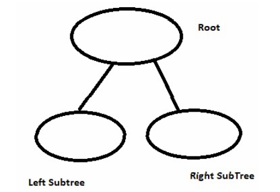
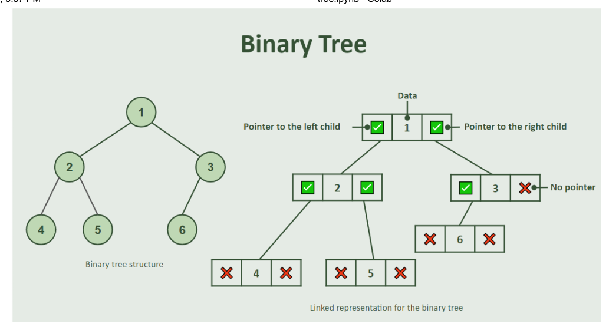
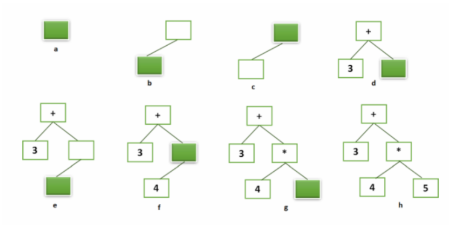

Tree#
TREE DAN BINARY TREE
Tree adalah struktur data non-linear, berbeda dengan stack, queue, atau deque. Bentuk tree dalam computer science mirip dengan pohon pada biologi karena sama-sama memiliki:
root (akar),
branches (cabang),
dan leaves (daun).
Perbedaannya, pada computer science posisi root berada di atas, sedangkan cabang dan daun berada di bawah.
TREE
Pada struktur data Tree, pencarian solusi dimulai dari root, lalu bergerak mengikuti edge/cabang hingga mencapai leaf yang berisi solusi atau tujuan. Contohnya pada struktur folder komputer, path menuju folder Struktur Data adalah: Computer → D: → Mata Kuliah → Struktur Data.
Istilah penting pada Tree:
Node → tempat menyimpan data/informasi.
Edge → penghubung antar node.
Root → node paling atas.
Path → urutan node dari root ke tujuan.
Children → node anak dari parent yang sama.
Parent → node induk yang memiliki children.
Siblings → node-node dengan parent yang sama.
Subtree → bagian tree yang terdiri dari parent dan turunannya.
Leaf node → node tanpa children.
Level → tingkatan node dari root.
Height → level tertinggi pada tree.
Tree dapat dipandang sebagai struktur yang terdiri dari:
sebuah root dan satu atau lebih subtree.
Subtree juga merupakan tree, sehingga struktur tree bersifat rekursif.

BINARY TREE
Binary Tree adalah tree yang setiap parent-nya memiliki maksimal dua children (anak), bisa satu atau dua node saja. Karena binary tree terdiri dari node yang menyimpan data dan hubungan antar node (edge), maka struktur ini lebih mudah diimplementasikan menggunakan tipe data class.

#kode class binarytree
class BinaryTree:
def __init__(self, root):
self.key = root
self.leftChild = None
self.rightChild = None
def insertLeft(self, new_node):
if self.leftChild == None:
self.leftChild = BinaryTree(new_node)
else:
t = BinaryTree(new_node)
t.leftChild = self.leftChild
self.leftChild = t
def insertRight(self, new_node):
if self.rightChild == None:
self.rightChild = BinaryTree(new_node)
else:
t = BinaryTree(new_node)
t.rightChild = self.rightChild
self.rightChild = t
def getRightChild(self):
return self.rightChild
def getLeftChild(self):
return self.leftChild
def setRootVal(self, obj):
self.key = obj
def getRootVal(self):
return self.key
PARSING BINTREE
Binary Tree dapat digunakan untuk menyelesaikan persamaan matematika dengan memperhatikan operator precedence dan tanda kurung. Operasi di dalam kurung harus diselesaikan lebih dahulu sebelum operasi lainnya.
Penyelesaian persamaan dengan Binary Tree dilakukan dalam dua tahap:
Membentuk Parse Tree
Evaluasi Persamaan
Pada Parse Tree:
Operator menjadi parent.
Operand menjadi leaf node.
Subtree kiri dan kanan merepresentasikan operasi yang harus dihitung terlebih dahulu.
Token pada ekspresi matematika:
(→ awal ekspresi baru / subtree baru.)→ akhir ekspresi.Operand → nilai/data.
Operator → operasi matematika.
Algoritma pembuatan Parse Tree:
Jika token
(→ buat left child baru dan pindah ke node tersebut.Jika token operator → simpan operator pada current node, buat right child baru, lalu pindah ke right child.
Jika token operand → simpan operand pada current node lalu kembali ke parent.
Jika token
)→ kembali ke parent node.
Untuk kembali ke parent digunakan struktur data Stack:
pushcurrent node saat turun ke child.popuntuk kembali ke parent node.
Berikut contoh pembuatan parse tree untuk ekpressi matematika.

#kode binary tree untuk persamaan matematika (parsing)
def stack():
s=[]
return (s)
def push(s,data):
s.append(data)
def pop(s):
data=s.pop()
return(data)
def peek(s):
return(s[len(s)-1])
def isEmpty(s):
return (s==[])
def size(s):
return(len(s))
class BinaryTree:
def __init__(self, root):
self.key = root
self.leftChild = None
self.rightChild = None
def insertLeft(self, new_node):
if self.leftChild == None:
self.leftChild = BinaryTree(new_node)
else:
t = BinaryTree(new_node)
t.leftChild = self.leftChild
self.leftChild = t
def insertRight(self, new_node):
if self.rightChild == None:
self.rightChild = BinaryTree(new_node)
else:
t = BinaryTree(new_node)
t.rightChild = self.rightChild
self.rightChild = t
def getRightChild(self):
return self.rightChild
def getLeftChild(self):
return self.leftChild
def setRootVal(self, obj):
self.key = obj
def getRootVal(self):
return self.key
def buildParseTree(mathExp):
tokenList = mathExp.split()
parentStack = stack()
expTree = BinaryTree(' ' )
push(parentStack,expTree)
print(tokenList)
currentTree = expTree
for i in tokenList:
if i == '(' :
print('if 1', i)
currentTree.insertLeft(' ' )
push(parentStack,currentTree)
currentTree = currentTree.getLeftChild()
elif i not in [ '+' , '-' , '*' , '/' , ')' ]:
print('if 2', i)
currentTree.setRootVal(int(i))
parent = pop(parentStack)
currentTree = parent
elif i in [ '+' , '-' , '*' , '/' ]:
print('if 3', i)
currentTree.setRootVal(i)
currentTree.insertRight(' ' )
push(parentStack,currentTree)
currentTree = currentTree.getRightChild()
elif i == ')' :
currentTree = pop(parentStack)
else:
raise ValueError
return expTree
pt = buildParseTree(' ( 3 + ( 4 * 5 ) ) ')
print(pt.getRootVal())
tmp=pt.getLeftChild()
print(tmp.getRootVal())
if pt.getLeftChild():
print("Tree")
['(', '3', '+', '(', '4', '*', '5', ')', ')']
if 1 (
if 2 3
if 3 +
if 1 (
if 2 4
if 3 *
if 2 5
---------------------------------------------------------------------------
AttributeError Traceback (most recent call last)
Cell In[2], line 76
72 raise ValueError
73 return expTree
74
75 pt = buildParseTree(' ( 3 + ( 4 * 5 ) ) ')
---> 76 print(pt.getRootVal())
77 tmp=pt.getLeftChild()
78 print(tmp.getRootVal())
79 if pt.getLeftChild():
AttributeError: 'NoneType' object has no attribute 'getRootVal'
EVALUASI PERSAMAAN MATEMATIKA
Penyelesaian persamaan matematika dengan Binary Tree dilakukan secara rekursif pada setiap subtree. Base case rekursi terjadi saat mencapai leaf node, karena leaf node tidak memiliki child lagi. Nilai pada leaf node adalah operand, sehingga fungsi rekursif mengembalikan nilai node tersebut. Proses rekursi:
Selesaikan left child dan right child terlebih dahulu.
Gabungkan hasil keduanya menggunakan operator pada parent node.
Hasil operasi menjadi nilai balik untuk level di atasnya.
Operasi aritmatika seperti +, -, *, / dapat dilakukan menggunakan modul operator, contohnya: operator.add(x, y)
# kode fungsi rekursif untuk mengevaluasi persamaan matematika
import operator
def evaluate(parse_tree):
opers = { '+' :operator.add, '-' :operator.sub, '*' :operator.mul,'/' :op}
left = parse_tree.getLeftChild()
right = parse_tree.getRightChild()
if left and right:
fn = opers[parse_tree.key]
return fn(evaluate(left),evaluate(right))
else:
return parse_tree.key
evaluate(pt)
---------------------------------------------------------------------------
NameError Traceback (most recent call last)
Cell In[8], line 13
10 else:
11 return parse_tree.key
---> 13 evaluate(pt)
Cell In[8], line 4, in evaluate(parse_tree)
3 def evaluate(parse_tree):
----> 4 opers = { '+' :operator.add, '-' :operator.sub, '*' :operator.mul,'/' :op}
5 left = parse_tree.getLeftChild()
6 right = parse_tree.getRightChild()
NameError: name 'op' is not defined